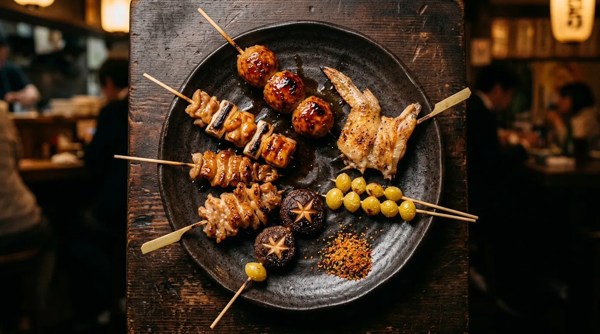
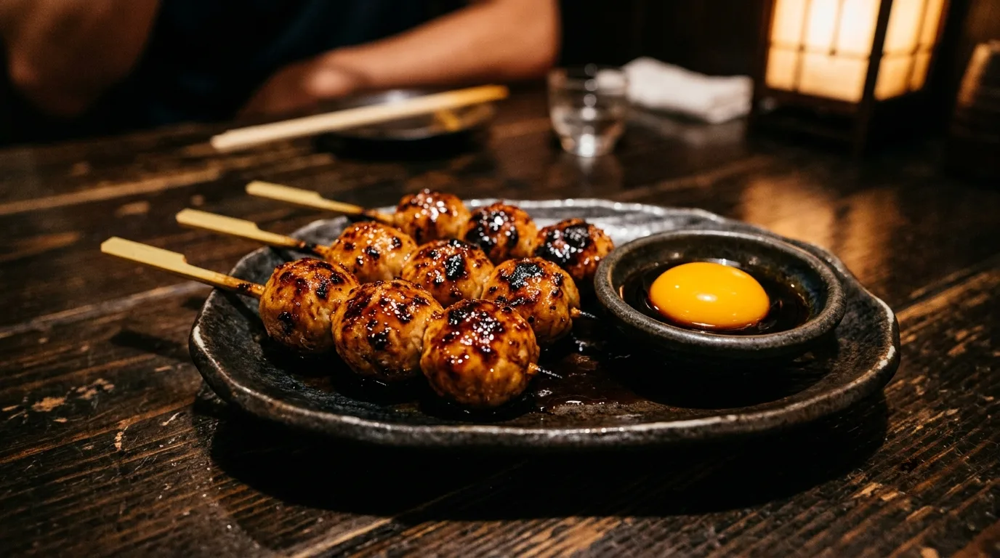
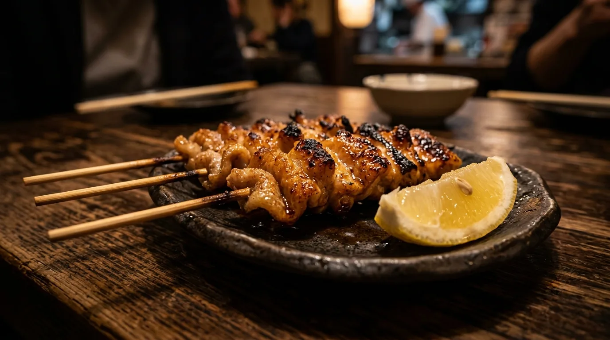
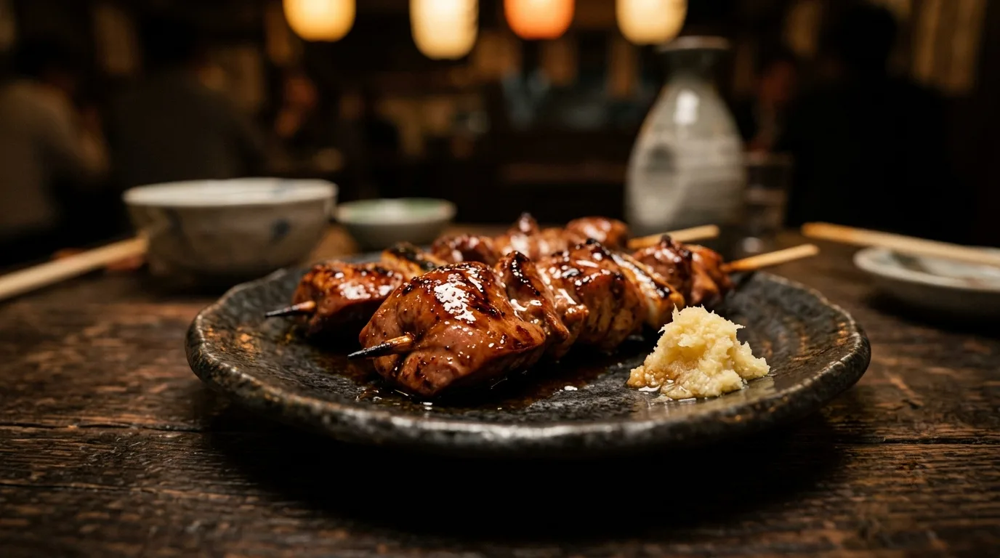
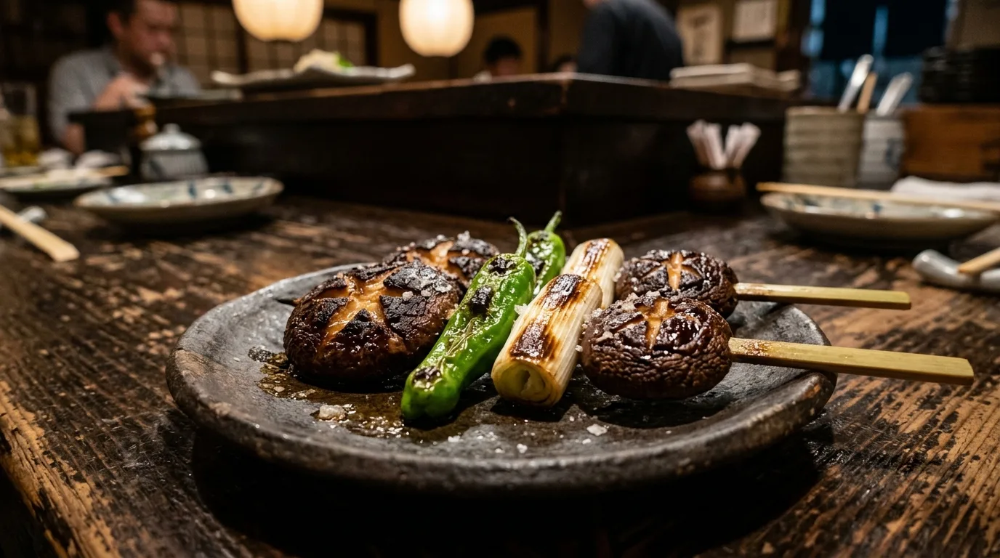

K-01 MOMO
もも串
旨みそのままの、ジューシーな一本。表面を先に焼き固めてから、中まで火を入れます。
¥260強火 ／ タレ
工程 04二 ／ 焼お品書き
工程 04焼くGRILL ／ お品書き
数は多くありません。その分、一本ずつ。串は 9 種類、それに一品と〆、甘味。価格はすべて税込です。ご注文をいただいてから焼きはじめます。
04-b ／ FIRST DISH
どれを頼むか決まらないときは、盛り合わせをどうぞ。

まずはこの一皿から、店の味を。六本それぞれ、炭からの高さを変えて焼いています。中身はその日の入荷によって変わります。
04-c ／ SKEWERS
K-01 から K-09 まで。一本ずつご注文いただけます。
K-01 MOMO
旨みそのままの、ジューシーな一本。表面を先に焼き固めてから、中まで火を入れます。
¥260強火 ／ タレ

K-03 TSUKUNE
刻んで、練って、丁寧に一本。卵黄は別皿でお出しします。お好みでどうぞ。
¥280中火 ／ タレ

K-02 KAWA
パリッと香ばしく、じっくり焼く。強火で脂を落としながら、時間をかけます。
¥220強火 ／ タレ

K-04 LEVER
臭みを抑え、しっとりと焼き上げる。遠火で時間をかけて、中心まで火を通します。
¥240遠火 ／ タレ
| 串 | 味の方向 | 火力の目安 | 価格 |
|---|---|---|---|
| K-01 もも | 旨みそのままの、ジューシーな一本 | 強火 | ¥260 |
| K-02 皮 | パリッと香ばしく | 強火 | ¥220 |
| K-03 つくね | 刻んで、練って、やわらかい一本 | 中火 | ¥280 |
| K-04 レバー | 臭みを抑え、しっとりと | 遠火 | ¥240 |
| K-05 ねぎま | 葱の甘さと肉の噛み合わせ | 中火 | ¥250 |
| K-06 手羽先 | 皮の香ばしさと、骨まわりの旨み | 中火から強火 | ¥300 |
| K-07 砂ずり | 歯ごたえのある一本 | 強火 | ¥230 |
| K-08 ぼんじり | 脂の甘さ | 中火 | ¥250 |
| K-09 野菜の串 | その日の野菜を、一本ずつ（椎茸・ねぎ・ししとう） | 中火 | ¥180 |
| おすすめ | 串 |
|---|---|
| タレ | K-01 もも ／ K-02 皮 ／ K-03 つくね ／ K-04 レバー |
| 塩 | K-05 ねぎま ／ K-06 手羽先 ／ K-07 砂ずり ／ K-08 ぼんじり ／ K-09 野菜の串 |
※ タレ・塩はお好みでお選びいただけます。おすすめは上の表のとおりです。
※ K-03 つくねにはタレをつけ、卵黄を別皿でお出しします。
※ 鶏は福岡県産と宮崎県産を、その日の入荷で使い分けています。
04-d ／ SEASONAL
お品書きに載らない一品です。
その時期だけの、旬をひと串に。内容はその時期によって変わります。お品書きは店頭でご案内しています。
その日に届いたものを、その日に仕込みます。数に限りがあるため、早い時間になくなることがあります。

04-e ／ SMALL PLATES
焼き上がりを待つあいだの小皿と、〆のごはんもの、甘味。
| 品目 | 内容 | 価格 |
|---|---|---|
| お通し | おひとりにつき一品お出しします。内容はその日によって変わります | ¥400 |
| 鶏のスープ | 骨と野菜で取ったスープを、温かいまま | ¥380 |
| きゅうりの浅漬け | 箸休めに。塩と昆布だけで漬けています | ¥320 |
| 冷やしトマト | 冷やしたトマトを、くし切りで | ¥380 |
| 出汁巻き玉子 | 注文をいただいてから焼きます。大根おろしを添えて | ¥520 |
| 焼き野菜の盛り合わせ | その日の野菜を、炭で焼いて三種ほど | ¥480 |
| 品目 | 内容 | 価格 |
|---|---|---|
| 鶏そぼろごはん | 刻んだ鶏をそぼろにして、ごはんの上に | ¥480 |
| 焼きおにぎり | 炭の端で、外側だけ香ばしく | ¥380 |
| 鶏スープの茶漬け | 上の鶏のスープを、ごはんにかけて | ¥520 |
| わらび餅 | きな粉をかけて、冷たいまま | ¥380 |
| アイス | バニラ ／ 抹茶 | ¥350 |
〆のごはんものは、お帰りのお時間に合わせてお出しします。ご注文のときにお声がけください。ラストオーダーは 22:30（お食事・お飲みものとも）です。
04-f ／ ABOUT PRICE
お品書きの価格はすべて税込です。
ご注文をいただいてから焼きはじめます。焼き上がった順にお出しします。熱いうちにどうぞ。混み合う時間帯は、お待たせすることがあります。
お酒について20歳未満の方の飲酒は法律で禁止されています。20歳未満の方への酒類の提供はいたしません。お車でお越しの方へのお酒の提供もいたしません。
※ お支払いの方法（現金・カード・交通系IC・QRコード決済）と、別々のお会計の扱いは工程 06 のページにまとめています。
04-g ／ NEXT
コースは3種類。ご予約制で、前日までにお申し込みください。